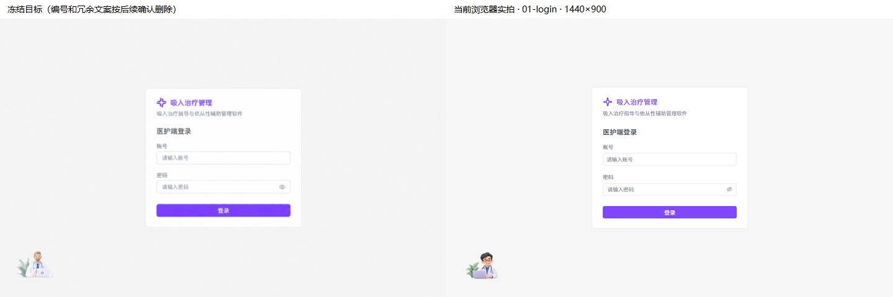
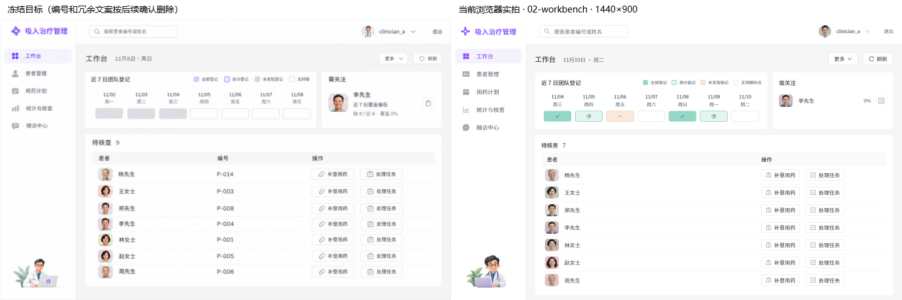
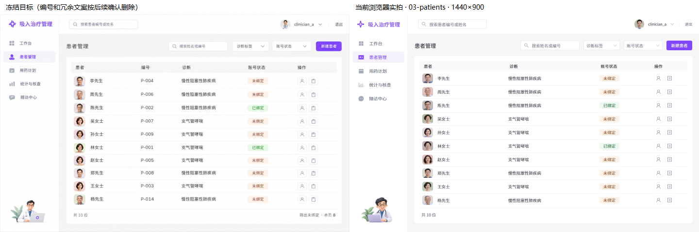

00 公共框架 · 01 登录 · 02 工作台 · 03 患者管理
独立子 Agent 视觉复验通过左侧为冻结目标，右侧为当前代码实拍。编号列和冗余解释依后续确认删除，登记格按青绿/杏色语义呈现。
桌面 1440 × 900侧栏 240 / 顶栏 80表格内距 20 / 行高 56正文 17 / 标题 22
01 登录



02 工作台（含 00 公共框架）



03 患者管理



真实后端实拍
上方对照使用隔离演示数据；以下通过实际 8010 后端登录并读取，日期和任务数量随运行数据变化。现有种子数据的10位演示患者已固定映射写实头像。